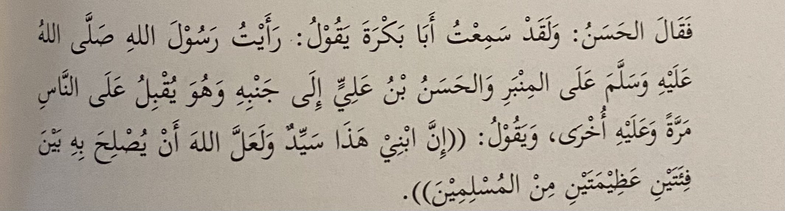

here is the translation. Its Sahīh Al-Bukharī 2704
Hassan and Hussein giving the bay’ah to Mu’awiya from the books of the shiites
-Rijal Al-Kashi page 86
They usually try to weaken one of the narrators but he is trustworthy from their books⬇️
You’ll find this narration in Ikthiyar ma’rifat Al-Rijal by Al-Tusi volume 1 page 325
I made a green ring around the narrator that they try to weaken when they come across this narration,
Fudayl Ghulam Muhammed B. Rashid
But he is a muhadith thiqa trustworthy and an Imami (twelver shia) and he has a book attributed to him,
Ishaq B. ‘ammar, Abu Al-Maghra, and Yunus B. Yaqub narrated from him. Al-shabastari mentioned.
Al-Faiq volume 2 page 568
Fudayl Mawla Muhammed B. Rashid from the men of Al-Sadiq AS and narrated from Al-Sadiq AS,
he has narrations in the tahdibeeyn (the two tahdibs) and in Rijal Al-Kashi.
And Al-Barqi said that he is thiqa trustworthy.
Al-Mawsu’at al-Rijaliya Al-Meysra page 361
They say this narrator is majhool😂